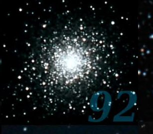

<!DOCTYPE html>
<html>
<head>
    <meta charset='utf-8'>
    <meta http-equiv='X-UA-Compatible' content='IE=edge'>
    <title>AR.js demo Stars</title>
    <script src="https://aframe.io/releases/1.0.4/aframe.min.js"></script>
    <script src="https://raw.githack.com/AR-js-org/AR.js/master/aframe/build/aframe-ar-nft.js"></script>


</head>

<body style='margin: 0; overflow: hidden;'>
<a-scene
        id="scene"
        vr-mode-ui="enabled: false"
        embedded
        arjs='sourceType: webcam; debugUIEnabled: false;'>
    <a-assets>
<!--        QUITE GOOD" Scale 300 or more-->
        <a-asset-item autoload id="object" src="./3d/space_nebula_hdri_panorama_360_skydome 2.glb"></a-asset-item>

        <!--   pigem ei - paras plörakas     <a-asset-item autoload id="object" src="./3d/space_nebula_hdri_panorama_360_skydome.glb"></a-asset-item>-->


        <!--        <a-asset-item autoload id="testModel" src="planets/Test.glb"></a-asset-item>-->
<!--        -->
            
            
            
            
            


        <!--        -->

    </a-assets>


<!--    <a-sphere position="0 5 -80" material="color:red; opacity: 0.5"  radius="1" ></a-sphere>-->
    <a-text id="timeLabel" position="0 2.5 -10" value="Ees keskel" align="center"></a-text>
   <a-entity id="galaxy" gltf-model="#object"
             opacity="0.5"
             visible="false"
             rotation="0 0 0"
             position="-20 0 -50"
             animation="property: rotation; to: 0 360 0; loop: true; dur: 60000; easing: linear"
             scale="300 300 300">
   </a-entity>

<!--    <a-image src="#transparent1"-->
<!--             rotation="45 0 0"-->
<!--             position="-20 5 -50"-->
<!--             scale="50 50 50"-->
<!--             animation__move = "property:position; dur: 20000; to: 0 100 -999"-->
<!--             animation__rotation = "property:rotation; dur: 30000; to: 45 0 360; loop:true; easing: linear"-->
<!--    ></a-image>-->

    <!--            animation="property: rotation; to: 0 360 0; loop: true; dur: 600000; easing: linear"-->

<!--    cluster2 -  udune; ant-nebula ok väiksema suurendusega; nebula3 -  ei tule ringiks kokku  -->

<!--    <a-sphere-->
<!--            opacity="0.8"-->
<!--            src="#nebula2"-->
<!--            rotation="0 0 0"-->
<!--            animation="property: scale; to: 10 10 10; dur: 20000; easing: easeInOutQuad"-->
<!--            radius="10"-->
<!--            side="back"-->
<!--            scale="0.1 0.1 0.1"-->
<!--            position="0 0 0"-->
<!--    ></a-sphere>-->

    <a-sky
            id="sky"
            opacity="0.8"
            visible="true"
            src="#nebula"
            rotation="0 0 0"
            animation="property: rotation; to: 0 360 -90; loop: true; dur: 2000000; easing: linear"


    >
    </a-sky>


    <!--<a-camera gps-camera="simulateLatitude: 58.3840; simulateLongitude: 26.7218;" rotation-reader>-->
    <a-camera>
    </a-camera>
</a-scene>
</body>
</html>
